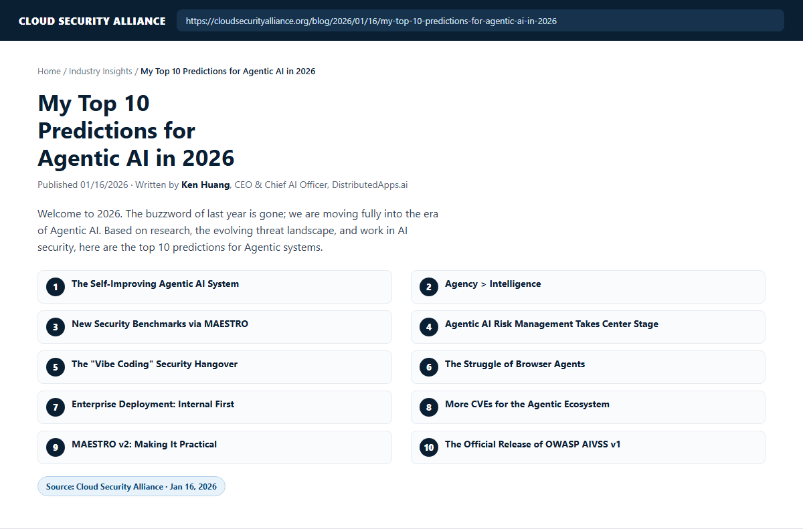

United States
Lab RSI evidence, AgencyBench, sustained CVE stream, enterprise surveys showing internal-first with growing dual programs, CSA/OWASP artifact leadership.

Ken Huang · DistributedApps.ai · USF Adjunct Professor
In January 2026, Ken Huang published My Top 10 Predictions for Agentic AI in 2026 with the Cloud Security Alliance as technology / industry predictions (also on Substack). This site checks each prediction against public evidence through September 27, 2026, and adds an optional investment-discussion layer created on that same date.
Not Investment Advice. Theses, pitfalls, and do-not-invest lines are for discussion and education only — not recommendations to buy, sell, or hold any security or company. Do your own diligence.

| # | Prediction | Verdict | One-line evidence |
|---|---|---|---|
| 1 | Self-improving / RSI agents | On track | Weco AIDE² Level-1 RSI (Jul 2026); China agent regulation constrains open deploy |
| 2 | Agency > Intelligence | On track | AgencyBench (ACL 2026), Autonomous Agency Scale; autonomy as risk object in EU/CN |
| 3 | MAESTRO security benchmarks | Partial | Playbooks + CI tooling live; shared public leaderboards still maturing |
| 4 | Agentic risk management | Confirmed | AICM v1.1, NIST AI RMF, China agent law (Jul 15), EU AI Act + control mappings |
| 5 | Vibe-coding security hangover | Confirmed | arXiv:2606.23130 — 91% of audited vibe-coded apps vulnerable |
| 6 | Browser agents struggle | On track | AG-UI production drift; A2UI at v0.9.1 / v1.0-rc — reliability still hard |
| 7 | Enterprise: internal first | Mostly confirmed | Contentstack: 37% internal-primary, 10% external-primary, 53% both |
| 8 | More agentic-ecosystem CVEs | Confirmed | LangChain CVE-2026-55443, MCP CVE-2026-59950, coding-agent RCEs |
| 9 | MAESTRO v2 practical release | Confirmed | CSA artifact released 2026-06-22 — 10 layers + Trust Control Plane |
| 10 | OWASP AIVSS v1 official release | In progress | v0.8 live; v1.0 public review through 2026-10-01; freeze targeted before year-end |
Lab RSI evidence, AgencyBench, sustained CVE stream, enterprise surveys showing internal-first with growing dual programs, CSA/OWASP artifact leadership.
Dedicated national AI-agent regulation enforceable from 2026-07-15; internal ops agents under localization; filing, audit logs, and human override for high-impact autonomy.
EU AI Act + AICM operational controls; A2UI standardization; CRA/NIS2 pressure on AI-generated software supply chains; cautious open-web agent deployment.
20 bilingual slides (EN / 中文). Technology predictions first; investment theses are an optional discussion layer. Use the EN / 中文 buttons in the header, or open with ?lang=en / ?lang=zh.